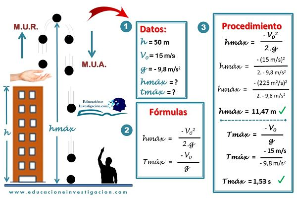
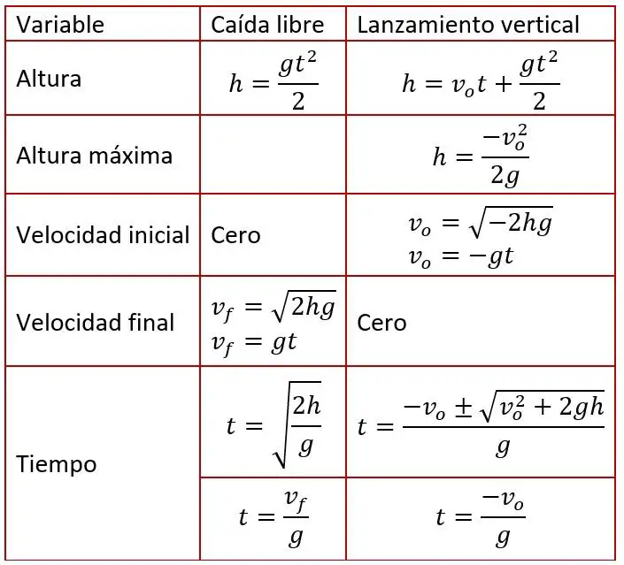

¿Que es el Movimiento "Caida libre"?

Concepto:
La caida libre es el movimiento donde se deja caer un objeto desde cierta altura y mientras este cae,no exite resitencia o elemento que aparezca en su camino para interrumpirlo. Por esa razon se llama "libre".
Ademas se considera un movimiento rectilinio uniforme acelerado, no solo porque los objectos caen como siguiendo una linea recta vertical,
sino tambien, por que la aceleracion del objecto es constante, es decir, mantiene los mismos valores.
Todos los objectos caen al mismo tiempo
Segun Galileo Galilei, todos los cuerpos , sin importancia su peso y tamaño, caen en el vacio al mismo tiempo.
De acuerdo a esto, si dejas caer un balon de futbol y una moneda desde un quinto piso, los dos entraran en contacto con el suelo
Caracteristicas de la Caida Libre:
1-Todo cuerpo al caer, describe una trayectoria vertical y se basa en la aceleración gravedad.
2-El objeto físico puede estar en descenso o ascenso.
3-La velocidad inicial es cero, V0 = 0.
4-Sirve para realizar cálculos de la altura desde donde cae el cuerpo físico.
5-Se puede calcular con pocos datos el tiempo que tarda un objeto desde que es soltado hasta que llega al suelo.
6-Se pueden realizar comparaciones con el M.R.U.V.
7-Se puede trabajar simultáneamente con otros temas como el de energía potencial.
8-Sirve para muchas aplicaciones del diario vivir o de la vida real.
9-Es un movimiento uniformemente acelerado M.U.A. cuando está en descenso, por ende la gravedad es positiva.
10-Es un movimiento uniformemente retardado M.U.R. cuando está en ascenso, acá decimos que la gravedad es negativa.

La importancia de la caida libre:
La importancia de la caida libre de los cuerpos radica en que podemos acelerar y desacelerar con una fuerza constante ouniforme. La caida libre existe cuando un cuerpo es lberado desde una altura x, con una velocidad inicial cero y durante la caida adquiere aceleracion debido a la fuerza de gravedad. Ademas los cuerpos dejados en caida aumentan su velocidad (hacia abajo) 9,8 m/s cada segundo. La aceleracion de gravedad es la misma para todos los objetos y es independiente de las masas de estos. En la caida libre no se tiene en cuenta la resistencia del aire.
Formulas de Caida Libre
